Q11. Debt Burdens
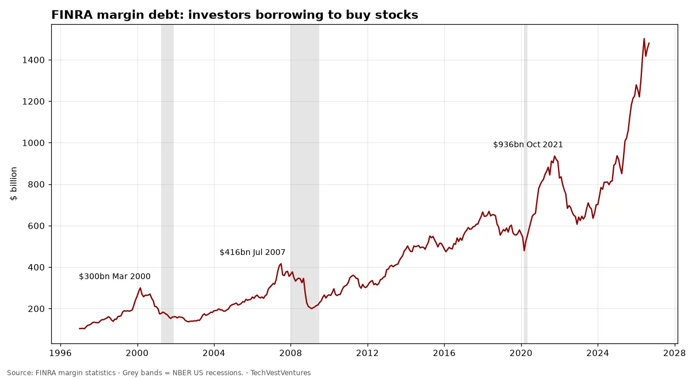
Debit balances in customers' securities margin accounts reached $1,480bn in Sep 2026, up 31% from a year earlier. Earlier local peaks in margin debt came in March 2000, mid-2007 and late 2021, each shortly before a major market decline — three episodes in this 1997+ series, which is too few to treat as a reliable timing rule.
Sources: FINRA margin statistics
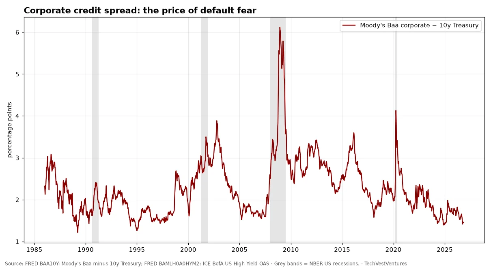
Baa corporate bond yield over the 10-year Treasury was 1.46 pts on Oct 22, 2026, near the low end of its range since 1986 (median 2.13; peak 6.16 in Dec 2008). ICE BofA US high-yield option-adjusted spread: 3.40 pts. Tight spreads mean lenders are pricing little risk; spreads have widened sharply in every recession shown, but they move with, not ahead of, a crisis.
Sources: FRED BAA10Y: Moody's Baa minus 10y Treasury FRED BAMLH0A0HYM2: ICE BofA US High Yield OAS
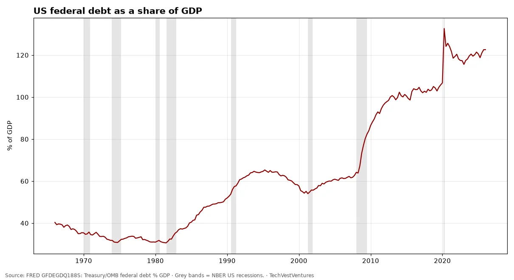
Total public debt was 123% of GDP in Jan 2026 (quarter start), versus 40% in 1966 and 62% in 2007.
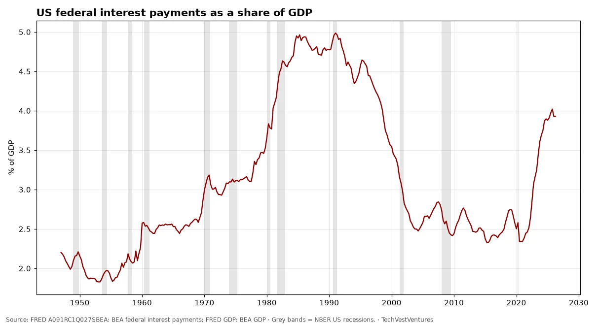
Federal government interest payments (annualized) were 3.93% of GDP in Apr 2026, compared with a previous peak of 4.99% in Jan 1991 and a low of 2.33% in Jul 2015.
Sources: FRED A091RC1Q027SBEA: BEA federal interest payments FRED GDP: BEA GDP
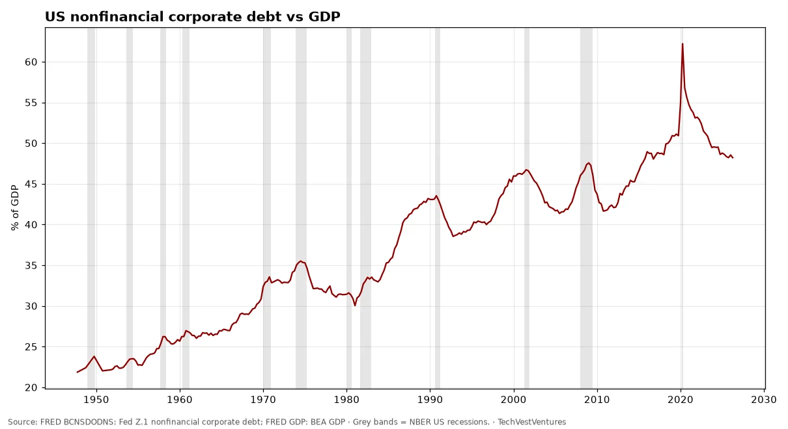
Debt securities and loans of nonfinancial corporations equalled 48% of GDP in Apr 2026; record 62% (Apr 2020). Previous local peaks in 1990, 2001, 2009 and 2020 coincided with recessions.
Sources: FRED BCNSDODNS: Fed Z.1 nonfinancial corporate debt FRED GDP: BEA GDP
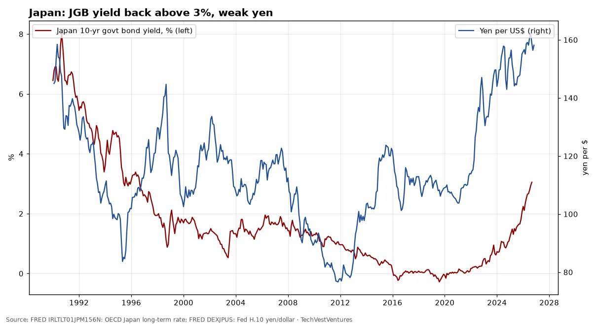
Japan's 10-year government bond yield averaged 3.05% in Sep 2026 (OECD monthly), the highest since 1996 in this series, after hovering near zero in 2016–2021. The yen was 158 per dollar on Oct 16, 2026. Rising JGB yields matter because Japan's gross government debt is over 230% of GDP and Japanese investors are large holders of foreign bonds.
Sources: FRED IRLTLT01JPM156N: OECD Japan long-term rate FRED DEXJPUS: Fed H.10 yen/dollar
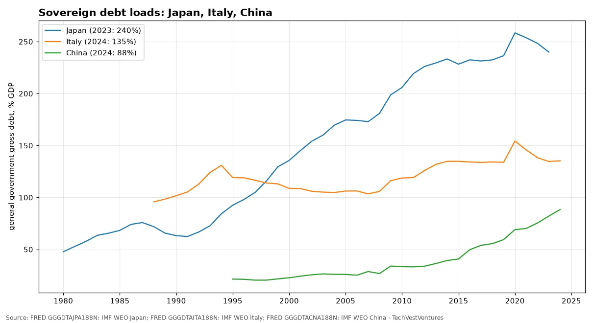
IMF World Economic Outlook general government gross debt, % of GDP (latest year in FRED shown in legend). China's ratio has more than doubled since the mid-2010s on the IMF measure, which excludes much local-government financing-vehicle debt.
Sources: FRED GGGDTAJPA188N: IMF WEO Japan FRED GGGDTAITA188N: IMF WEO Italy FRED GGGDTACNA188N: IMF WEO China
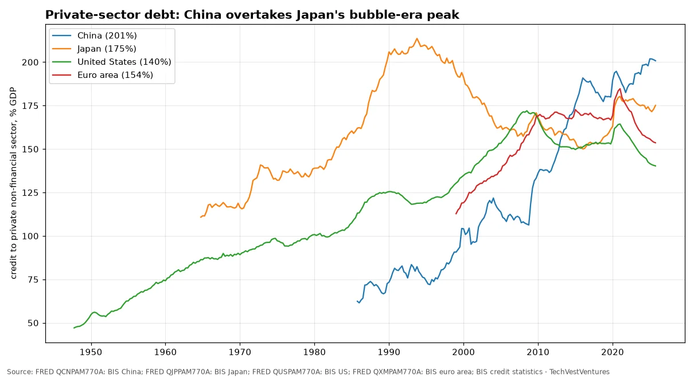
BIS total credit to the private non-financial sector (households and companies). China reached 201% of GDP in Oct 2025, up from 107% in 2008. Japan's ratio peaked at 214% in Oct 1993 before its lost decades; the BIS has long flagged rapid credit build-ups as a crisis warning.
Sources: FRED QCNPAM770A: BIS China FRED QJPPAM770A: BIS Japan FRED QUSPAM770A: BIS US FRED QXMPAM770A: BIS euro area BIS credit statistics
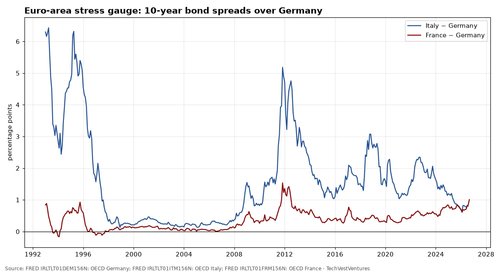
Monthly OECD long-term yields. France–Germany spread 1.01 pts in Sep 2026; Italy–Germany 0.80 pts in Aug 2026. Italy's spread peaked at 5.18 pts in Nov 2011 during the euro debt crisis. Since 1993 France's spread has exceeded Italy's only in Dec 2025, Jan 2026, Jul 2026 and Aug 2026 (latest month with both): markets now price French fiscal risk on a par with Italy's.
Sources: FRED IRLTLT01DEM156N: OECD Germany FRED IRLTLT01ITM156N: OECD Italy FRED IRLTLT01FRM156N: OECD France
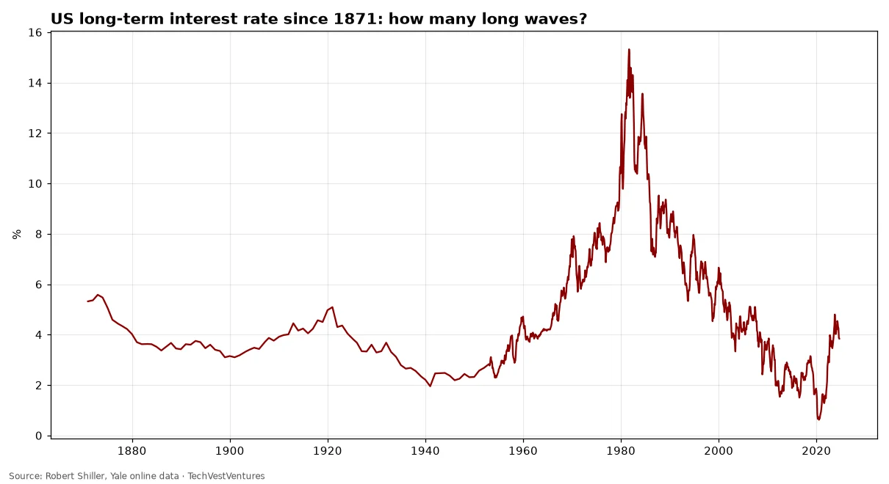
Long-term US government bond yield from Shiller's data. Major troughs around 1899, 1941 and 2020; one great peak in 1981 (15.3%). In 150 years that is roughly two to two-and-a-half long (Kondratieff-length) cycles — fewer than the more-than-3 repetitions Michael Hentschel requires before treating a long-wave pattern as evidence.
Sources: Robert Shiller, Yale online data
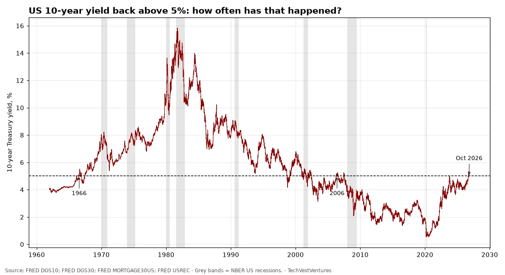
The 10-year Treasury closed at 5.13% on Oct 21 and 4.96% on Oct 22, after first crossing 5% in mid-September; the 30-year is 5.29% and the 30-year mortgage rate 7.32%. Cycle count: since 1962, the 10-year has risen through 5% after at least 12 months below it only twice before, in July 1966 (followed by a 15-year bond bear market and the 1969-70 recession) and May 2006 (followed by the 2008 recession). That is 2 precedents, fewer than the 3+ repeats Michael Hentschel requires, so 'every time yields cross 5%, a recession follows' is a stab in the dark, not a pattern.
Sources: FRED DGS10 FRED DGS30 FRED MORTGAGE30US FRED USREC
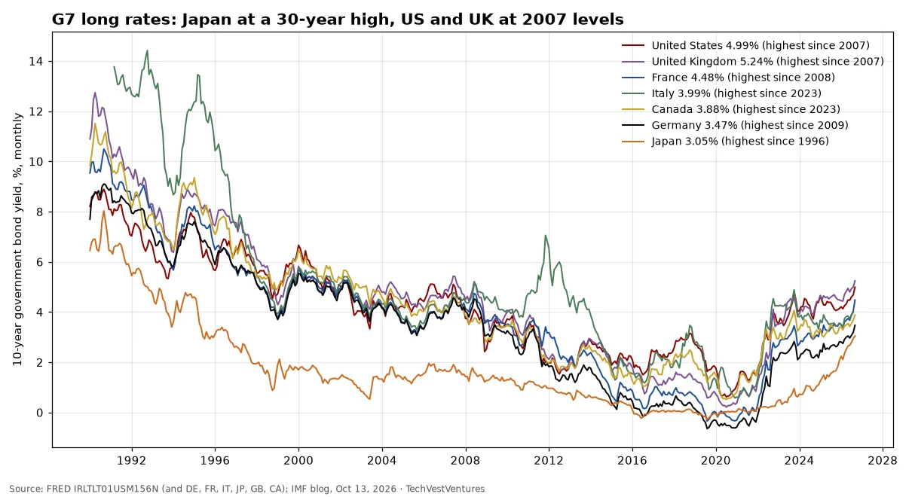
Monthly 10-year government bond yields (OECD via FRED), latest Sep 2026 (Italy Aug). Japan's 3.05% is the highest since 1996; the UK's 5.24% and the US 4.99% are the highest since mid-2007; France since 2008 and Germany since 2009. The IMF's Oct 13 blog says the G7 average 10-year yield is the highest in nearly two decades and warns of the fiscal stakes. Cycle count: since 1990 the US 10-year has made three major cyclical peaks (late 1994, early 2000, mid-2007); two were followed by a US recession within about 1-2 years (2001, 2008-09) and one by a soft landing (1995). Three cycles with a 2-of-3 hit rate is right at Michael Hentschel's threshold, so read it as a warning, not a prediction.
Sources: FRED IRLTLT01USM156N (and DE, FR, IT, JP, GB, CA) IMF blog, Oct 13, 2026
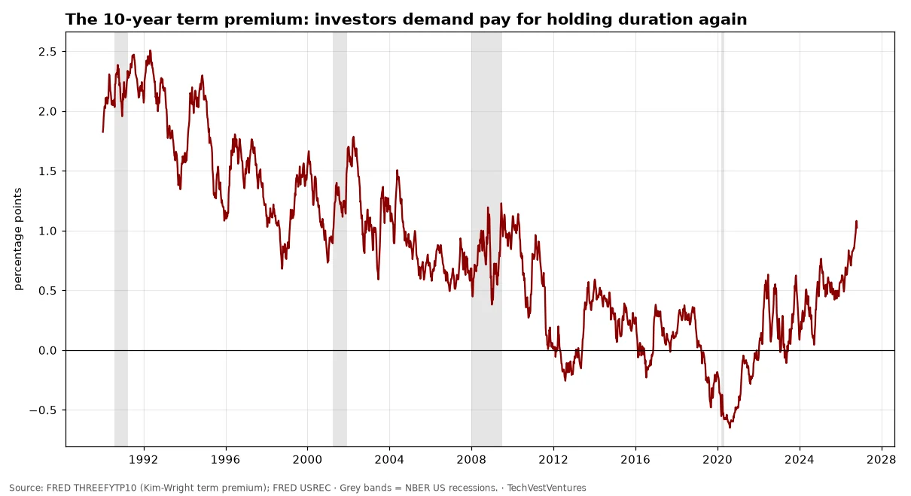
The Kim-Wright 10-year term premium (Fed Board model) is the extra yield investors demand to lock money up for ten years instead of rolling short bills. It stood at 0.99 pts on Oct 16, 2026; October's monthly average (1.06) is the highest since April 2010, after averaging below zero in 2019-2021. A rising premium means long rates are climbing for reasons other than expected Fed policy: supply of Treasuries, inflation risk and doubts about fiscal discipline. Cycle count: the premium fell through most of 1990-2020, a single secular decline, so there is no multi-cycle base for predicting what level it 'should' reach. Treat it as a gauge, not a forecast.
Sources: FRED THREEFYTP10 (Kim-Wright term premium) FRED USREC
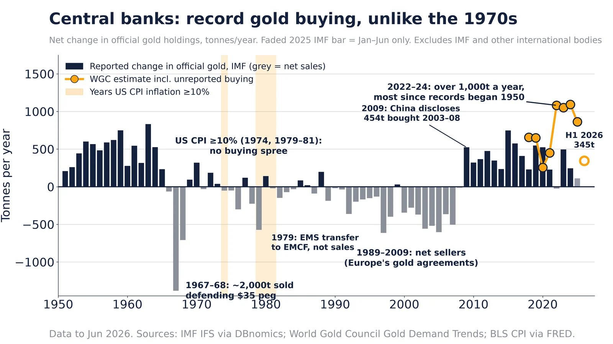
Central-bank net gold purchases, tonnes per year, 1950–H1 2026. Sources: IMF IFS, World Gold Council.
Data
- 2022–2024 (Data): over 1,000t a year by WGC estimates (2022: 1,082t; 2024: 1,092t), the most since records began in 1950.
- H1 2026 (Data): 345t bought (WGC).
- 1974 and 1979–81 (Data): US inflation hit 10%+ but central banks did not go on a gold buying spree.
- 1989–2008 (Data): central banks were net sellers in most years.
Doubt on the viral version: Rand Group's 'line went vertical, then double-digit inflation' chart tracks the gold price or reserve value, not tonnes bought. Purchases did not surge in the 1970s.
Rebuttal: Original post: Rand Group, Oct 27, 2026
Sources: IMF IFS official gold holdings via DBnomics World Gold Council Gold Demand Trends FRED CPIAUCNS (US CPI)
Sep 2026 10-year yields: France 4.48%, about 1.0 pt over Germany. See charts M20 and M27. Source: OECD via FRED.
Data
- Sep 2026 (Data): France 4.48%, Germany 3.47%, Greece 4.23%, Portugal 3.85%.
- Aug 2026 (Data): Italy 3.99%, below France.
Doubt: the viral 174bp spread figure could not be verified. OECD monthly data show about 101bp over Bunds. The ranking (France above Italy, Greece and Portugal) holds.
See chart M20: Euro-area 10-year spreads over Germany (Q3 Europe Bonds tab) See chart M27: G7 long rates (Q3 Europe Bonds tab)
Sources: FRED IRLTLT01FRM156N: OECD France FRED IRLTLT01DEM156N: OECD Germany FRED IRLTLT01GRM156N: OECD Greece FRED IRLTLT01PTM156N: OECD Portugal FRED IRLTLT01ITM156N: OECD Italy
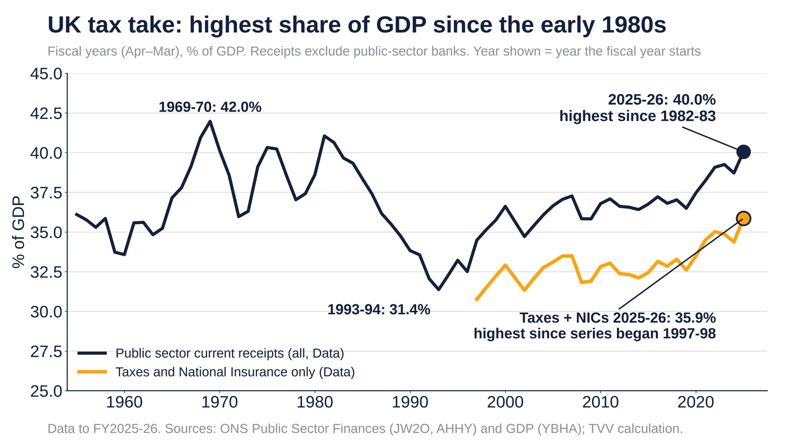
UK public receipts 40.0% of GDP in FY2025-26, highest since 1982-83. ONS data, TVV calculation.
Data
- 1969-70 (Data): 42.0% of GDP, the post-war peak.
- 1993-94 (Data): 31.4%, the low.
- 2025-26 (Data): 40.0%, up from 38.7% a year earlier; highest since 1982-83.
- 2025-26 (Data): taxes and National Insurance alone 35.9%, highest since that series began in 1997-98.
Doubt on the viral version: Michael A. Arouet's UK tax chart cites no source and appears to mix nominal and real figures. This rebuild uses ONS ratios to nominal GDP only.
Rebuttal: ONS public sector finances, receipts series JW2O
Sources: ONS JW2O: public sector current receipts excl. banks ONS AHHY: taxes and National Insurance ONS YBHA: GDP at current prices
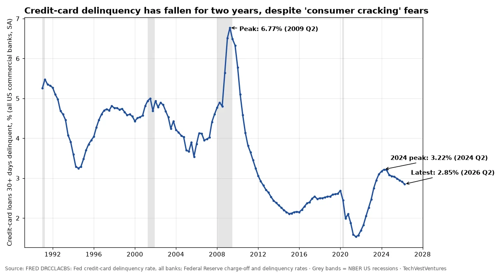
Delinquency on US bank credit-card loans was 2.85% in Q2 2026, the eighth straight quarterly decline from 3.22% in Q2 2024. It is still above the 2019 level (about 2.6%) but far from the 6.77% peak of 2009. Repeat count: a run-up of half a point or more preceded or accompanied recessions only twice since 1991 (2001 coincident, 2008 about 18 months early). The 2021-24 rise of 1.7 points produced no recession. With 2 hits and 1 large false alarm, using this as a recession signal is a stab in the dark. It says card stress is easing, not that a recession is near.
Sources: FRED DRCCLACBS: Fed credit-card delinquency rate, all banks Federal Reserve charge-off and delinquency rates
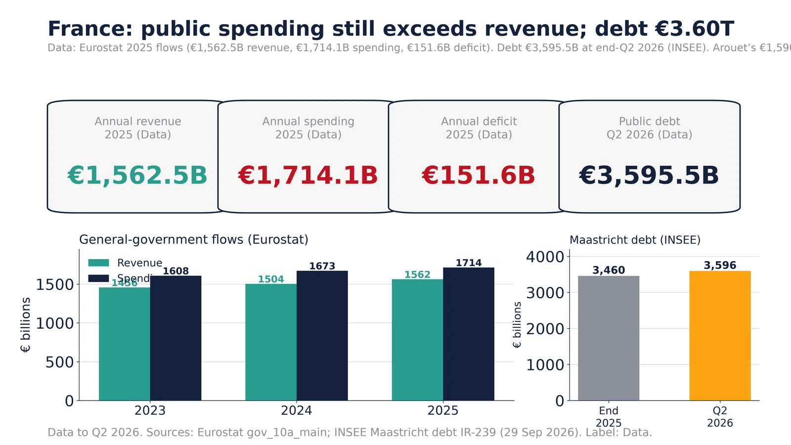
2025: revenue €1,562.5B, spending €1,714.1B, deficit €151.6B. Debt €3,595.5B Q2 2026. Eurostat, INSEE.
Data
- 2025 (Data): Eurostat general-government revenue €1,562.5B; spending €1,714.1B; deficit €151.6B (5.1% of GDP per INSEE).
- End-2025 (Data): Maastricht debt €3,460.1B (115.7% of GDP).
- Q2 2026 (Data): debt €3,595.5B (119.0% of GDP); net debt €3,366.8B (INSEE IR-239, 29 Sep 2026).
- Arouet graphic claimed €1,590 / €1,755 / €165 / €3,650 — each figure is higher than the official series; TVV uses Eurostat/INSEE only.
Arouet’s framing (‘bankrupt’, ‘never repay’) is opinion. Official deficit is large but not unique in Europe; debt sustainability depends on rates, growth and ECB backstops, which this chart does not model.
Rebuttal: INSEE: France public deficit and debt (IR-239)
Original post: Michael A. Arouet, Nov 2026
Sources: Eurostat gov_10a_main: general government revenue and expenditure INSEE: France public deficit and debt INSEE English: government debt
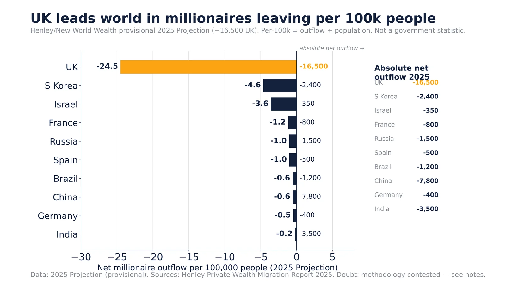
2025 Projection: UK −16,500 (−24.5 per 100k). Henley/New World Wealth provisional. Not a government series.
Projection
- 2025 Projection (Henley/New World Wealth): UK net −16,500 millionaires; China −7,800; India −3,500; S Korea −2,400.
- Per 100k (TVV calc from Henley flows ÷ mid-year population): UK −24.5; S Korea −4.6; Israel −3.6; France −1.2 — matches Arouet’s chart within rounding.
- Absolute vs per-capita: China loses more people (−7,800) but only −0.6 per 100k because of population size.
- Henley defines HNWI as liquid investable wealth ≥ $1M (excludes most real estate in 2025 methodology).
Henley/New World Wealth figures are provisional commercial estimates, not official migration stats. Tax Policy Associates (Jul 2025) argues the methodology is opaque and inconsistent with HMRC/OBR non-dom evidence; treat as directional only.
Rebuttal: Tax Policy Associates: Henley millionaire-migration methodology critique
Original post: Michael A. Arouet, Nov 2026
Sources: Henley Private Wealth Migration Report 2025 (press) Henley country wealth flows Tax Policy Associates critique (Jul 2025)
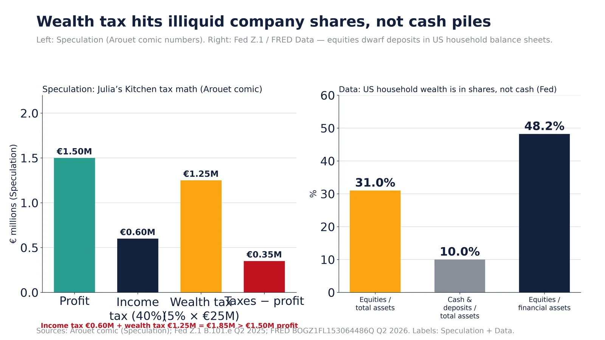
Speculation: €1.85M tax > €1.5M profit on a €25M firm. Data: US equities 31% of assets vs deposits 10% (Fed Q2 2025).
Speculation + Data
- Speculation (Arouet comic): €1.5M profit, 40% income tax (€0.6M), 5% wealth tax on a €25M valuation (€1.25M) → combined tax €1.85M exceeds profit.
- Q2 2025 (Data): Fed Z.1 B.101.e — US household corporate equities (direct+indirect) $61.1T = 31.0% of total assets; currency & deposits $19.7T = 10.0%.
- Q2 2026 (Data): FRED BOGZ1FL153064486Q — equities 48.2% of US household financial assets (record).
- Argument that holds in Data: a large share of household wealth is in shares/business equity, so a wealth tax often requires selling or borrowing against illiquid assets. The comic’s 5% rate and forced closure are Speculation, not a calibrated policy simulation.
The 5% rate and €25M valuation are illustrative, not an enacted tax. Real wealth-tax designs (e.g. Spain, Norway, historical French ISF/IFI) use lower rates, exemptions and liquidity carve-outs. Do not read the comic as a forecast of any specific bill.
Rebuttal: Fed Z.1 B.101.e: Balance Sheet of Households and Nonprofit Organizations
Original post: Michael A. Arouet, Nov 2026
Sources: Fed Z.1 B.101.e (Sep 11, 2025 release) FRED BOGZ1FL153064486Q (equities share of household financial assets) Fed Survey of Consumer Finances materials
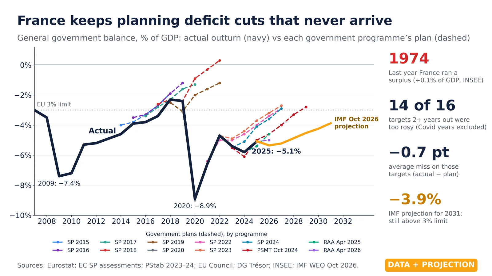
1995–2025 actuals and 2015–2026 plans: 14 of 16 targets two-plus years out missed. Eurostat, EC, Trésor, IMF.
Data + Projection
- 1974 (Data): France’s general government last ran a surplus in 1974, at +0.1% of GDP (INSEE long series). Every year since 1975 has been a deficit, so Arouet’s 1974 claim holds.
- 2015–2026 plans (Data): TVV checked 12 programmes (Stability Programmes 2015–2024, the Oct 2024 medium-term plan and the 2025–26 progress reports). 14 of 16 targets two or more years out were too optimistic, missing by 0.7 pt of GDP on average (Covid years excluded).
- Apr 2023 plan (Data): the worst non-Covid misses. Paris planned −4.4% for 2024 and −3.7% for 2025; outturns were −5.8% and −5.1%. The Apr 2018 programme even planned a +0.3% surplus for 2022.
- 2025 (Data): the deficit fell to −5.1% of GDP, slightly better than the −5.4% target in the Apr 2025 report. Near-term targets are sometimes met; the medium-term paths are what slip.
- Oct 2026 (Projection): the IMF sees −5.4% in 2026, −4.5% in 2029 and −3.9% in 2031, still above the 3% limit. The government’s Apr 2026 report targets −5.0% for 2026 and under 3% by 2029.
- Omitted: programmes before 2015 and the Apr 2021 programme (not retrieved from primary files), and the Mélenchon and Le Pen programme costings in the post (not data series).
Arouet’s chart shows forecasts from 1999 that always overshoot. TVV could verify only 2015–2026 vintages, and near-term estimates were sometimes too pessimistic: −3.1% planned for 2019 against −2.4% actual, −6.1% estimated for 2024 against −5.8%. The bias is real for targets two or more years out, not for every forecast. Actuals have also been revised since the plans were written.
Rebuttal: French Treasury: 2026 annual progress report (RAA)
Original post: Michael A. Arouet, Nov 2026
Sources: Eurostat gov_10dd_edpt1: government deficit and debt INSEE: national accounts of public administrations (DD_CNA_APU) Comptes Publics: French public deficit series European Commission: fiscal surveillance of France French Treasury: Stability Programme 2023–2027 French Treasury: Stability Programme 2024–2027 Council of the EU: France medium-term fiscal plan (ST 5016/2025 REV 1) French Treasury: 2025 annual progress report French Treasury: 2026 annual progress report (RAA) IMF World Economic Outlook database, October 2026 bd-econ: IMF WEO vintage database Original post: Michael A. Arouet, Nov 2026
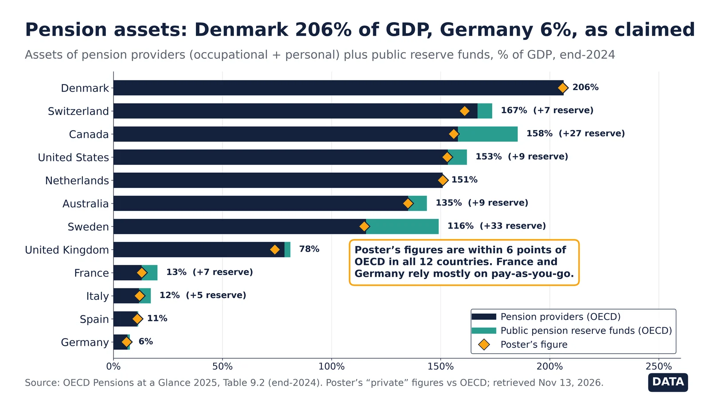
End-2024: pension providers hold 206% of GDP in Denmark, 6% in Germany; poster within 6 points. OECD.
Data
- End-2024 (Data): OECD Table 9.2 puts assets held by pension providers at 206.4% of GDP in Denmark, 166.9% Switzerland, 157.9% Canada, 153.3% US, 150.9% Netherlands, 135.1% Australia, 115.8% Sweden and 78.4% UK. Arouet’s figures match, all within 6 points.
- End-2024 (Data): at the bottom, France 12.9%, Italy 11.7%, Spain 10.8% and Germany 6.4%. Poster’s 13, 12, 11 and 6 hold. The OECD total is 95.2% of GDP.
- End-2024 (Data): the OECD counts public pension reserve funds separately: Sweden 33.3%, Canada 27.4%, US 8.7%, Australia 8.6%, France 7.3%, Italy 5.4%. Adding them would lift Sweden to 149% and Canada to 185% of GDP.
- Definition (Data): OECD “pension providers” include occupational and personal plans, defined-benefit and defined-contribution, and some public-sector plans and book reserves. The poster’s “private” label is therefore loose, notably for Canada and Sweden.
- Context: low funded assets in France, Italy, Spain and Germany mostly reflect large pay-as-you-go state pensions, not an absence of retirement income. The chart compares funded assets, not pension generosity.
- Omitted: asset mix, returns and the poster’s year (not stated); TVV uses the OECD’s latest, end-2024.
The ranking holds, but “private retirement assets” overstates what is counted. The OECD category includes some public-sector and book-reserve plans, and reserve funds sit on top. Low funded assets in France and Germany do not mean thin pensions, because the state pays most benefits from current taxes.
Rebuttal: OECD Pensions at a Glance 2025: assets earmarked for retirement (Table 9.2)
Original post: Michael A. Arouet, Nov 2026
Sources: OECD Pensions at a Glance 2025: assets earmarked for retirement (Table 9.2) OECD Pensions at a Glance 2025 (publication page) Original post: Michael A. Arouet, Nov 2026